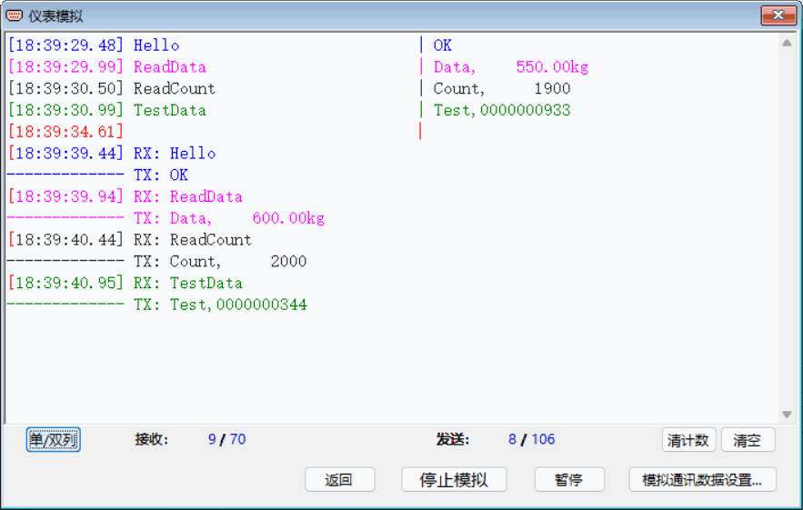
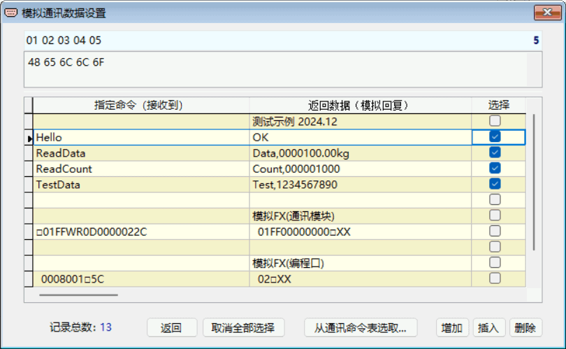
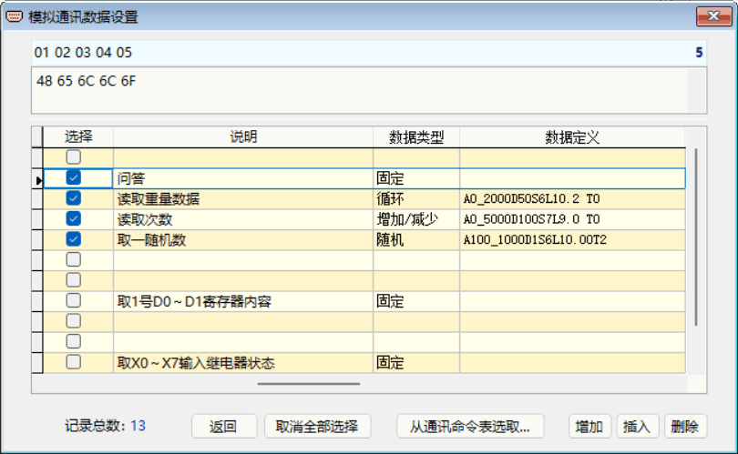
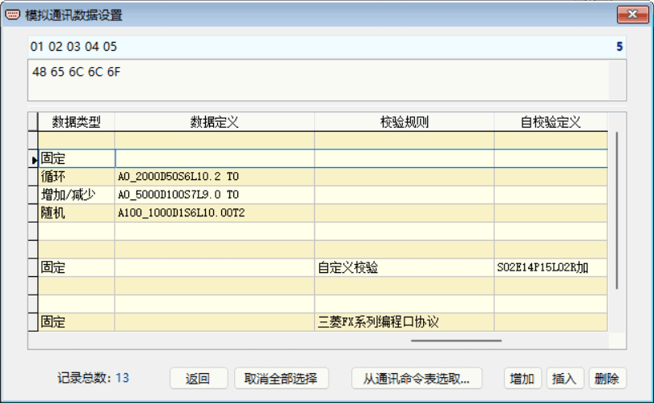

仪表模拟
RS232 Tool 提供的仪表模拟通讯功能，是指从串口接收到指定的通讯命令时，将向串口发送预先设定好的返回数据。这相当于是对仪表进行简易的模拟仿真，当然还不是完全仿真仪表。该功能便于在无仪表的情况下也能开展串口通讯测试工作。
点击主界面菜单中或工具栏上的“仪表模拟”图标，将打开下图所示窗口。
“仪表模拟”窗口中的编辑框是用于监控通讯数据，在“单列”模式下其每一行表示从串口接收和发送的数据，中间用“|”符号分隔开，当数据字符串长度大于监控区宽度时，末尾字符用“...”符号替代表示。
通讯数据可在返回后，通过点击主界面工具栏上的 “保存通讯数据”图标进行保存。示例 ：
1. 接收到命令字符串“Hello”，发送返回数据字符串“OK”；
2. 接收到命令字符串“ReadData”，发送返回数据字符串“Data, 550.00kg”；
3. 接收到命令字符串“ReadCount”，发送返回数据字符串“Count, 1900”；
4. 接收到命令字符串“TestData”，发送返回数据字符串“Test,0000000933”；
5. 接收到命令字符串“[05]01FFWR0D0000022C”，发送返回字符数据串“[02]01FF00000000[03]70”。注：这里用括号“[]”内容表示ASCII字符。
开启模拟前应预先设定好需要模拟仪表的通讯数据，可通过点击【 模拟通讯数据设置...】进行相关操作，其弹窗内容见下面的“模拟通讯数据设置” 窗口内容之一、之二、之三图例，各栏目可点击表格底部的水平滚动条移动查看。
“模拟通讯数据设置”窗口中表格的每一行记录， 包括拟模拟的仪表一条通讯命令即“指定命令”，及期望接收到该命令后回复的数据即“返回数据”，以及“选择”、“说明”、“数据类型”、“数据定义”等，可以在表格中直接进行修改、输入或粘贴等编辑操作。
在窗口上部的十六进制编辑区中，固定以十六进制显示表中当前行的通讯命令字符串内容，可直接对编辑区中的该条命令进行编辑、修改。对于那些不能在表格中显示与输入的特殊ASCII码字符，即可在此编辑处理。输入或修改内容后，可按回车健结束。
十六进制编辑区上方的数字标尺，便于准确定位编辑区中通讯命令字符串各字符的位置。
模拟数据的数据类型和数据定义
RS232 Tool 的通讯模拟数据可实现按其类型如增减、循环等自动改变，其 规定的数据类型共有4种，即“固定”、“增加/减少”、“循环”及“随机”。
-
固定类型——顾名思义，其返回数据不会改变，不设定类型时默认为“固定”；
-
增加/减少类型——其数据是按一个给定值进行增加或减少计算，增加或减少到给定的数据范围值时不再改变，给定值为负数时做减少计算；循环类型——其数据是按一个给定值进行增加或减少计算，增加或减少到给定的数据范围值时将重新开始计算，给定值为负数时做负循环；随机类型——其数据是在给定的数据范围内取一随机数值。
“返回数据”要实现按数据类型自动改变，需遵循RS232 Tool的数据定义格式 。其格式采用一字符串来定义，用“A”、“D”、“S”、“L”、“T”五个字母作为关键字，在定义时一个也不能缺少，排列次序也不要改变。下面以一个返回数据的定义“A0_2000D50S6L10.2 T0 ”为例，说明其各关键字的格式：
-
A——代表数据范围，“A0_2000”，数值从0到2000，用“_”字符分隔开；
-
D——代表增加值，“D50”，增加量50，如果是-50，则是减少；S——代表字串中数据部分的开始位置，“S6”，从整个字串的第6位开始；L——代表数据长、小数几位，“L10.2 ”，10位数据、小数2位，用空格填充无数字位；T——代表间隔几次改变数据，“T0”，间隔0次，即数据每次均改变。
示例：
1. 示例指令“Hello”的数据类型“固定”，无数据定义；
2. 示例指令“ReadData”的数据类型“增加/减少”，其数据定义“A0_2000D50S6L10.2 T0 ”，表示其返回字串中数据部分的数据变化范围是0~2000，每次增加50，数据开始位置是第6个字符，数据长10位、小数2位、用空格填充无数字位，间隔0次做增加计算，第一次的返回数据串是“Data, 150.00 kg”；
3. 示例指令“ReadCount”的数据类型“循环”，其数据定义“A0_5000D100S7L9.0 T0”，表示其返回字串中数据部分的数据变化范围是0~5000，每次增加100，数据开始位置是第7个字符，数据长9位、小数0位、用空格填充无数字位，间隔0次做增加计算，第一次的返回数据串是“Count, 1100 ”；
4. 示例指令“TestData”的数据类型“随机数”，其数据定义“A100_1000D1S6L10.00T2”，表示其返回字串中数据部分的数据取值范围是100~1000，每次随机取数，数据开始位置是第6个字符，数据长10位、小数0位、用“0”填充无数字位，间隔2次取一次随机数，第n次的返回数据串是“Test,0000000344 ”。
注意，若数据定义的设置不符合上述格式要求时，“返回数据”不会实现自动改变，相当于“固定”类型。
RS232 Tool最多可支持二段数据定义的设置，比如“A0_99999999D3000S8L10.00T50A0_999999D1S26L10.00T0”。
模拟数据的校验规则和自校验定义
RS232 Tool 的通讯模拟数据可实现对返回数据按所选校验规则进行校验计算，校验规则
有“自定义校验”、“三菱FX系列专用协议格式4”、“三菱FX系列编程口协议”、“CRC16/ModbusRTU”及“LRC/ModbusASCII”等。若校验规则选择“自定义校验”，则需设置其对应的“自校验定义”格式数据 。其格式采用一字符串来定义，用“S”、“E”、“P”、“L”、“R”五个字母作为关键字，在定义时一个也不能缺少，排列次序也不要改变；如果输入的格式不对、不合理，则返回数据将为空。下面以一个返回数据“[02]01FF00000000[03]70”的定义“S02E14P15L02R加”为例（注意：其中的数字需用2位，如“2”—“02”），说明其各关键字的格式：
-
S——代表字串计算校验的开始位，“S02”，从整个字串的第2位开始；
-
E——代表字串计算校验的结束位，“E14”，到整个字串的第14位结束；P——代表字串中放置校验码的开始位置，“P15”，校验码是从整个字串的第15位开始；L——代表校验码长，“L02 ”，校验码为2位长；R——代表位运算，需从“加”、“减”、“与”、“或”、“异或”之一选择，“R加”，表示选择累加和。
仪表模拟操作的一般步骤
1. 在主界面中选好相应串口并设定其通讯协议，点击“字体和颜色”选择字体字号（建议选择“Fixedsys”或“宋体”以便对齐）；
2. 点击工具栏上【仪表模拟】图标，打开其窗口 ；
3. 点击
【模拟通讯数据设置】，在表格中输入或选择后 选择所需所需的通讯模拟指令（最多勾选32条），若无所需则先编辑命令再做选择 ，命令也可以从通讯命令表中选取；4. 为所选通讯数据选择其对应的“数据类型”，并根据“数据类型”进行“数据定义”设置；
5. 为所选通讯数据选择其对应的“校验规则”，若选择“自定义校验”则需进行“自校验定义”设置；
6. 返回后点击【开启模拟】 ，进入通讯模拟测试，在窗口监控区中显示从串口接收和发送的各条数据串；
7. 若“单列”模式接收和发送的字串长大于监控区宽时，可点击【单/双列】切换双列显示 ；
8. 点击
【停止模拟】，结束本次模拟通讯测试。

“模拟通讯数据设置” 窗口内容之一：“指定命令”、“返回数据”、“选择”栏目部分

“模拟通讯数据设置” 窗口内容之二：：“说明”、“数据类型”、“数据定义”栏目部分

“
模拟通讯数据设置” 窗口内容之三：“校验规则”、“自校验定义”栏目部分
